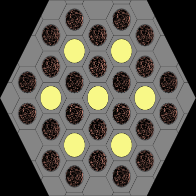

(a) Standard—24 fuel and seven heat pipes (b) Control—18 fuel and six heat pipes
Figure 1: Fuel assemblies for the gHPMR.
The specifications for the heat pipe are in Table 3, which are adopted from the Argonne National Laboratory report [2]. The “evaporator length” here includes not just the 1.6 m active core length (length of fuel pins) but also the 0.2 m reflector section that is coupled to the heat pipe.
Table 3: Heat pipe specifications [2].
Parameter Value
Working Fluid Sodium Wick Material SS 316 Cladding Material SS 316 Evaporator Length [m] 1.8 Adiabatic Length [m] 0.4 Condenser Length [m] 1.8 Outer Cladding Radius [m] 0.0105 Inner Cladding Radius [m] 0.0097 Outer Wick Radius [m] 0.0090 Inner Wick Radius [m] 0.0080 Wick Porosity 0.7 Wick Permeability [m[2]] 2E-9 Pore Radius [m] 1E-8 Wick Fill 10% overfill by volume at 500 K
The compact and tristructural isotropic specifications are based on Advanced Gas Reactor 2
[3] and shown in Table 4.